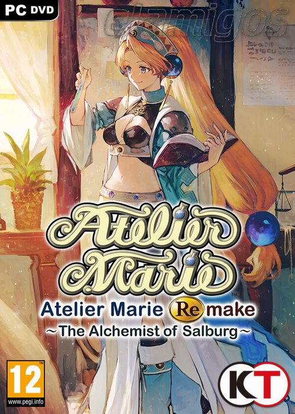

Atelier Marie Remake The Alchemist of Salburg 9.13 GB
Género: JRPG
No hay que salvar el mundo. Marie, una estudiante con dificultades intenta
dominar la alquimia, vivir aventuras y completar diversas misiones a la
vez que intenta graduarse.El origen de la serie Atelier vuelve con nuevos
elementos!